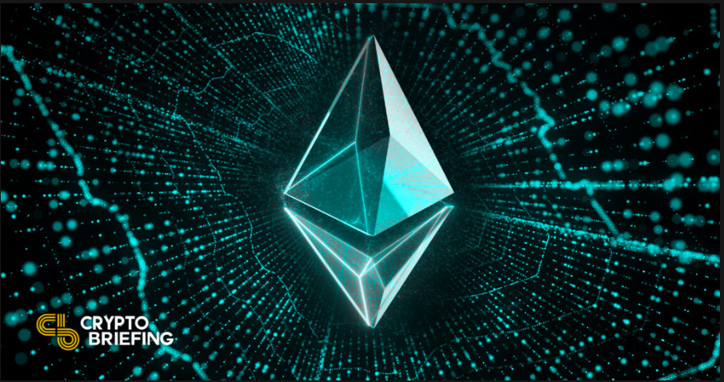
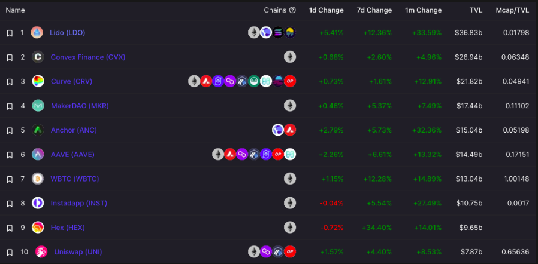

About Rocket Pool
Rocket Pool is a decentralized staking protocol for Ethereum 2.0 (Eth2) that aims to make Ethereum staking more accessible to a wider range of users. Since the project's status and features may have evolved since then, it's essential to verify the most current information on Rocket Pool from official sources. Here are some key details about Rocket Pool based on my last update:
Decentralized Staking: Rocket Pool was designed to enable users to stake their Ethereum (ETH) in a decentralized and trustless manner. This means users could participate in Ethereum 2.0 staking without the need to run their validator nodes.
Node Operator Network: The Rocket Pool platform relies on a network of node operators who run validator nodes on behalf of users. These node operators contribute to the security and performance of the Ethereum 2.0 network.
rETH Tokens: Rocket Pool issued rETH tokens to users in exchange for their staked ETH. These rETH tokens represent users' staked assets and can be traded or used within the Ethereum ecosystem.
Liquid Staking: Rocket Pool introduced a feature called "liquid staking," allowing users to trade their staked assets without waiting for withdrawal periods, providing liquidity and flexibility.
Slashing Protection: The platform aimed to protect users from potential validator-slashing penalties in Eth2 by implementing a decentralized insurance fund.
Governance: Rocket Pool was governed by its community, allowing token holders to participate in decision-making processes related to the protocol's development and upgrades.
Cross-Chain Compatibility: The project had plans to expand its services to support staking on other blockchain networks, providing cross-chain compatibility for users.
Security: Rocket Pool underwent security audits to ensure the safety of user funds and the reliability of its smart contracts and infrastructure.
Partnerships and Collaborations: The project may have established partnerships and collaborations within the blockchain and DeFi space to enhance its services and reach. Please note that the details provided here are based on information available up to September 2021. Since the blockchain space is continually evolving, I recommend visiting the official Rocket Pool website and checking their official announcements and documentation for the most up-to-date and accurate information about the project's current status and features. Rocket Pool is a decentralized Ethereum-based platform designed to facilitate and incentivize the staking of Ethereum 2.0 (Eth2) tokens. Eth2 is an upgrade to the Ethereum network that transitions from a Proof of Work (PoW) to a Proof of Stake (PoS) consensus mechanism. Staking involves locking up a certain amount of cryptocurrency as collateral to support the network's operations in exchange for rewards. Rocket Pool serves as a staking-as-a-service platform, allowing users to participate in Eth2 staking without the need to run their validator nodes, which can be technically complex and require a substantial amount of ETH as collateral. Here are some key features and aspects of Rocket Pool:
Decentralized Staking: The Rocket Pool is designed to be a decentralized network of node operators and users, ensuring the security and reliability of the staking infrastructure.
Node Operators: Rocket Pool relies on node operators who run validator nodes and provide the infrastructure for staking. These operators earn rewards by participating in the network and maintaining its stability.
User Staking: Users can stake their ETH in Rocket Pool's smart contracts, which are managed by node operators. Users receive staking rewards in return for their participation.
Minimized Risk: Rocket Pool aims to minimize the risk associated with staking by providing a decentralized and trustless platform. Users don't need to worry about managing their validator keys or maintaining uptime.
Tokenized Staking: Rocket Pool issues tokens, known as rETH, to represent users' staked ETH. These tokens can be traded and used within the Ethereum ecosystem while still earning staking rewards.
Liquid Staking: Rocket Pool offers a feature called "liquid staking," which allows users to trade their staked assets without waiting for withdrawal periods, providing more flexibility.
Slashing Protection: To protect users from potential validator slashing penalties in Eth2, Rocket Pool uses a decentralized insurance fund.
Governance: The Rocket Pool platform is governed by its community, allowing users to participate in decision-making and protocol upgrades.
Cross-Chain Compatibility: Rocket Pool has plans to expand its services to other blockchain networks, allowing users to stake assets on multiple blockchains.
Rocket Pool aims to make Ethereum staking more accessible and user-friendly for a wider range of participants, including those with smaller amounts of ETH who might not have the resources or technical expertise to run their validators. However, it's essential to conduct thorough research and exercise caution when participating in any decentralized finance (DeFi) platform, as there are always risks involved.
Create
Creating a platform like Rocket Pool, which involves developing a decentralized staking-as-a-service platform for Ethereum 2.0 (Eth2), is a complex and multifaceted project that requires a significant amount of technical expertise and resources. Below is a simplified outline of the steps involved in creating a platform like Rocket Pool:
Team Formation:
Assemble a team of blockchain developers, smart contract engineers, security experts, and project managers with experience in Ethereum, blockchain, and decentralized finance (DeFi).
Market Research and Planning: Conduct thorough market research to identify the demand for a decentralized staking platform like Rocket Pool. Define the project's goals, target audience, and unique selling points.Create a detailed project roadmap and business plan.
Smart Contract Development: Develop Ethereum smart contracts for the core functionality of the platform, including staking, rewards distribution, and slashing protection. Implement mechanisms for user deposits, withdrawals, and staking management.
Node Operator Network: Recruit and onboard node operators who will run validator nodes on the Ethereum 2.0 network. Establish a trustless and decentralized system for node selection and operation.
Toke nomics and Governance: Design the toke omics of the platform, including the creation and distribution of tokens representing staked assets (e.g., rETH).Implement a governance mechanism that allows token holders to participate in decision-making processes. User Interface (UI) and User Experience (UX):Develop a user-friendly front-end interface that allows users to interact with the platform easily.Ensure the security of user accounts and funds through robust authentication and encryption.
Security Audits: Conduct security audits of the smart contracts, node operator infrastructure, and the entire platform to identify and mitigate vulnerabilities.
Slashing Protection and Insurance: Implement mechanisms to protect user-staked assets from potential validator-slashing penalties in Eth2.Establish a decentralized insurance fund to cover potential losses.
Testing and Deployment: Deploy the platform on the Ethereum mainnet or a testnet for initial testing. Conduct extensive testing, including both functional and security testing, to ensure the platform's stability and security.
Community Building: Build a community around the project by engaging with users and potential stakeholders.Encourage early adoption and participation in the platform.
Launch and Maintenance: Launch the platform to the public. Continuously monitor and maintain the platform, addressing any issues or improvements that arise.
Regulatory Compliance: Ensure compliance with relevant financial regulations and legal requirements in the jurisdictions where the platform operates.
Marketing and Growth: Develop a marketing strategy to promote the platform and attract users and node operators.Explore partnerships and collaborations within the blockchain and DeFi space.
Scaling and Expansion: Consider expanding the platform's services to support staking on other blockchain networks, providing cross-chain compatibility.
Documentation and Support: Provide comprehensive documentation and customer support to assist users in using the platform effectively.
Creating a project like Rocket Pool is a significant undertaking and may require substantial financial resources and a dedicated team. Additionally, it's essential to stay updated with the latest developments in the blockchain and Ethereum space, as the technology and regulatory landscape continue to evolve.
Use
As of my last knowledge update in September 2021, Rocket Pool was still under development and had not yet launched its full platform. However, I can provide a general outline of how you might expect to use Rocket Pool once it's operational. Keep in mind that the actual usage process may vary depending on the platform's development progress and updates.
Here are the general steps you might follow to use Rocket Pool:
Access the Rocket Pool Platform:
Visit the official Rocket Pool website or access the platform through a compatible Ethereum wallet or decentralized application (dApp) browser.

Create an Account
If the platform requires user accounts, you'll need to create one. This typically involves setting up a secure password and possibly enabling two-factor authentication (2FA) for added security.
Deposit Ethereum (ETH): To participate in staking on Rocket Pool, you'll need to deposit ETH into the platform. This ETH will be used as collateral for staking on the Ethereum 2.0 network.
Stake Your ETH: Once your ETH is deposited, you'll likely have the option to choose the amount you want to stake. Rocket Pool may offer different staking pools or options with varying levels of risk and reward.
Receive rETH Tokens: In return for staking your ETH, you will receive rETH tokens. These tokens represent your staked ETH and can be traded or used within the Ethereum ecosystem while still earning staking rewards.
Earn Staking Rewards: As Rocket Pool validators participate in the Ethereum 2.0 network and generate rewards, a portion of these rewards will be distributed to users who have staked their ETH in the Rocket Pool platform. Your rETH balance will increase over time as you earn rewards.
Monitor Your Staking: Use the Rocket Pool platform or any associated tools to monitor your staking performance, including rewards earned and any potential penalties or slashing events.
Withdraw Your Staked ETH: Rocket Pool may have withdrawal periods or conditions. When you're ready to withdraw your staked ETH, you can initiate the withdrawal process through the platform.
Convert rETH Back to ETH: After the withdrawal period is complete, you can convert your rETH tokens back to ETH and transfer them to your wallet or exchange them as needed.
Stay Informed: Stay updated with the latest announcements, changes, and governance proposals related to Rocket Pool. The platform may have a governance mechanism that allows token holders to vote on important decisions.
It's essential to note that the specific steps and features of Rocket Pool may change as the platform evolves. Therefore, it's crucial to refer to the official Rocket Pool website and documentation for the most up-to-date and accurate instructions on how to use the platform safely and effectively. Additionally, consider doing your research and potentially seeking advice from experienced users or the Rocket Pool community before getting started.
Action As of my last knowledge update in September 2021, Rocket Pool was a project in development, working on creating a decentralized Ethereum 2.0 staking platform. However, I do not have real-time information about the current status or actions of the Rocket Pool project beyond that date. To get the most up-to-date information about Rocket Pool's actions, progress, and developments, I recommend visiting the official Rocket Pool website, checking their social media channels, or consulting the latest news and updates in the cryptocurrency and blockchain community.
You can also consider joining the Rocket Pool community through their official channels to participate in discussions, ask questions, and stay informed about their activities. Remember that the cryptocurrency and blockchain space can be dynamic, with projects continually evolving, so it's essential to rely on current and official sources for accurate information.
Auction There were no significant mentions or information about an "auction" related to Rocket Pool. Rocket Pool primarily focused on creating a decentralized Ethereum 2.0 staking platform and related services, such as node operation and staking rewards.
However, there may have been developments or events related to Rocket Pool since that time that I am not aware of. To get the most accurate and up-to-date information regarding any auctions or specific events related to Rocket Pool, I recommend checking their official website, blog, social media channels, and any other official communication channels they may have. This will provide you with the latest information about any auctions or other activities associated with the project.